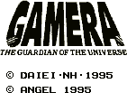

Gamera - Gameboy Games

This is a fighting game with a unique combat system. Combat is done in rounds
where each fighter gets to choose what they want to do from a battle menu (much
like RPG games).
Anime Video Game Resource Center © 1998 by Luis A. Cruz